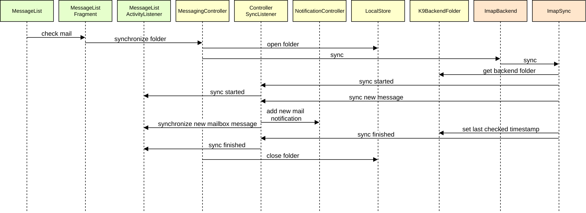
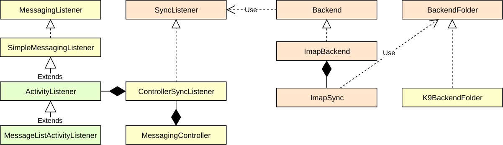
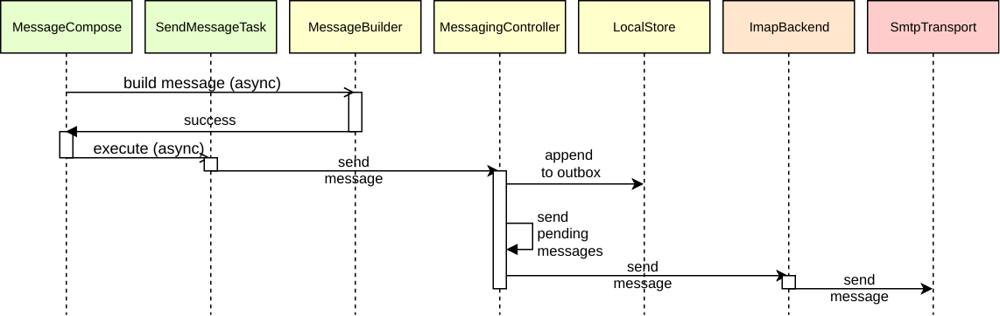
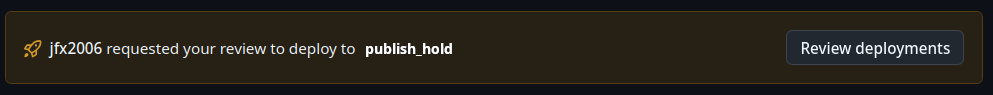

Contributing to Thunderbird for Android
Welcome to the Thunderbird for Android project! We’re excited to have you here and welcome your contributions.
Getting Started
Before you start contributing, please take a moment to familiarize yourself with the following:
- Mozilla Community Participation Guidelines: https://www.mozilla.org/en-US/about/governance/policies/participation/
- Frequently Asked Questions: https://forum.k9mail.app/c/faq
- Support Forum: https://forum.k9mail.app/
Bug Reports and Feature Requests
If you encounter a bug or have a feature request, please follow these steps:
- Search the existing issues to see if your issue or feature has already been reported.
- If you can’t find an existing issue, please open a new issue on GitHub.
Translations
If you’d like to help to translate K-9 Mail / Thunderbird for Android, please visit the Weblate - K-9 Mail/Thunderbird project.
Contributing Code
Thank you for your willingness to contribute code! Here’s how you can get started:
1. Find an issue:
- Check the issue tracker for open issues.
- Look for issues labeled good first issue for a good starting point.
- Propose a new feature by opening a new issue
- Avoid issues labeled unconfirmed or tb-team as they are not yet ready for contributions.
2. Discuss your plan:
- Leave a comment on the issue you want to work on, explaining what you plan to do. This helps avoid duplicate work and gets you feedback from the team.
3. Fork the repository:
- Create your own fork of the Thunderbird for Android repository on GitHub.
4. Create a branch:
- Start a new branch from the
mainbranch to keep your changes separate. - Name your branch descriptively (e.g.,
fix-issue-123oradd-feature-xyz).
5. Make your changes:
- Write your code and commit it to your branch.
- Follow our Code Style Guidelines
6. Test your changes:
- Run the project’s tests to make sure everything works and that your changes don’t introduce any regressions.
- If applicable, write new tests to cover your changes.
7. Push your changes:
- Upload your branch to your forked repository.
8. Open a pull request:
- Create a pull request to merge your changes into the main project.
- Provide a clear and concise description of your changes, including:
- A reference to the issue you’re addressing.
- A summary of the changes you made.
- Any relevant screenshots or testing results.
Thank You!
Thank you for taking the time to contribute to Thunderbird for Android! We appreciate your help in making the project better and more useful for everyone.
Repository structure
The project is divided into several directories below which are nested gradle projects.
app
This contains the highest level code such as UI and core logic.
backend
APIs for sending and receiving messages
Low level code for dealing with internet mail protocols
plugins
Additional, standalone, libraries used by Thunderbird for Android

Walkthrough
To help you understand the design, the following sequence diagrams show typical flows through the classes. Each class is colour-coded by its top-level project.
Reading email


Sending email

Thunderbird for Android Release Documentation
Please see the sub-pages for release documentation
Releases
Thunderbird for Android follows a release train model to ensure timely and predictable releases. This model allows for regular feature rollouts, stability improvements, and bug fixes.
Branches in the Release Train Model
Daily
Daily builds are used for initial testing of new features and changes. Feature flags are additionally used to work on features that are not yet ready for consumption.
- Branch:
main - Purpose: Active development of new features and improvements
- Release Cadence: Daily
- Audience: Developers and highly technical users who want to test the bleeding edge of Thunderbird. Daily builds are unstable and not recommended for production use.
- Availability: Daily builds are available on the Play Store internal channel. APKs are available on ftp.mozilla.org.
Beta
After features are stabilized in Daily, they are merged into the Beta branch for broader testing. Uplifts are limited to bug/security fixes only. The Beta branch serves as a preview of what will be included in the next stable release, allowing for user feedback and final adjustments before general availability.
- Branch:
beta - Purpose: Pre-release testing
- Release Cadence: Weekly with the option to skip if not needed
- Merge Cadence: Every 2 Months
- Audience: Early adopters and testers. Testers are encouraged to provide error logs and help reproduce issues filed.
- Availability: Beta builds are available from the Play Store and F-Droid.
Release
This branch represents the stable version of Thunderbird, which is released to the public. It is tested and suitable for general use. Bug fixes and minor updates are periodically applied between major releases. Uplifts to Release are limited to stability/security fixes only.
- Branch:
release - Purpose: Stable releases
- Release Cadence: Major releases every 2 months. Minor releases every 2 weeks with the option to skip if not needed.
- Merge Cadence: Every 2 months
- Audience: General users. Users may be filing bug reports or leaving reviews to express their level of satisfaction.
- Availability: Release builds are available from the Play Store and F-Droid.
Example Feature Release Flow
- A new feature is developed and merged via pull requests into the
mainbranch. - Every 2 months,
mainis merged into thebetabranch for external testing and feedback. - Every 2 months,
betais merged into thereleasebranch, and a release is made available to all users.
Example Bug Release Flow
- A high-impact bug is fixed and merged via pull request into the
mainbranch. - After it has received adequate testing on
daily, the fix is cherry-picked (uplifted) to thebetabranch and released in the next scheduled beta. - After it has received adequate testing on
beta, the fix is cherry-picked (uplifted) to thereleasebranch and released in the next stable minor release.
Sample Release Timeline
| Milestone | Details | Date |
|---|---|---|
| TfA 11.0a1 starts | Feb 28 | |
| TfA merge 11.0a1 main->beta | May 2 | |
| TfA 11.0b1 | May 5 | |
| TfA 11.0bX | If needed | May 12 |
| TfA 11.0bX | If needed | May 19 |
| TfA 11.0bX | If needed | May 26 |
| TfA 11.0bX | If needed | Jun 2 |
| TfA 11.0bX | If needed | Jun 9 |
| TfA 11.0bX | If needed | Jun 16 |
| TfA 11.0bX | If needed | Jun 23 |
| TfA 11.0bX | If needed | Jun 30 |
| TfA merge 11.0bX beta->release | Jun 30 | |
| TfA 11.0 | Jul 7 | |
| TfA 11.X | If needed | Jul 21 |
| TfA 11.X | If needed | Aug 4 |
| TfA 11.X | If needed | Aug 18 |
| TfA 11.X | If needed | Sep 1 |
Feature Flags
Thunderbird for Android uses Feature Flags to disable features not yet ready for consumption.
- On
main, feature flags are enabled as soon as developers have completed all pull requests related to the feature. - On
beta, feature flags remain enabled unless the feature has not been fully completed and the developers would like to pause the feature. - On
release, feature flags are disabled until an explicit decision has been made to enable the feature for all users.
Versioning System
Version Names
Thunderbird for Android stable release versions follow the X.Y format, where:
- X (Major version): Incremented for each new release cycle.
- Y (Patch version): Incremented when changes are added to an existing major version.
For beta builds, the suffix b1 is appended, where the number increments for each beta. For daily builds, the suffix a1 is appended, which remains constant.
Version Codes
The version code is an internal version number for Android that helps determine whether one version is more recent than another.
The version code for beta and release is an integer value that increments for each new release.
The version code for daily is calculated based on the date and has the format yDDDHHmm:
- y: The number of years since a base year, with 2023 as the starting point (e.g., 2024 is 1)
- DDD: The day of the year in 3 digits, zero-padded
- HH: The hour of the day in 2 digits (00–23)
- mm: The minute of the hour in 2 digits
For example:
2024-02-09 16:45→1 | 040 | 16 | 45→104016452025-10-12 09:23→2 | 285 | 09 | 23→228509232122-02-09 16:45→99 | 040 | 16 | 45→990401645
Merge Days
Active development occurs on the main branch and becomes part of daily. Every 2 months:
mainis merged intobeta, for testing.betais merged intorelease, making it publicly available.
On the former, main carries over to beta, where the community can test the changes as part of “Thunderbird Beta for Testers” (net.thunderbird.android.beta) until the next merge day.
On the latter, code that was in beta goes to release, where the general population receives product updates (net.thunderbird.android).
When a merge occurs, the version name is carried forward to the next branch. However, the alpha and beta suffixes are removed/reset accordingly. For example, let’s say we are shortly before the Thunderbird 9.0 release. The latest releases were Thunderbird 8.2, Thunderbird Beta 9.0b4, and Thunderbird Daily 10.0a1. Here is what happens:
- The
betabranch is merged torelease. The resulting version on release changes from 8.2 to 9.0. - The
mainbranch is merged tobeta. The resulting version on beta changes from 9.0b4 to 10.0b1 - The
mainbranch version number is changed from 10.0a1 to 11.0a1
While the version name changes, it must be ensured that the version code stays the same for each branch. Our application IDs are specific to the branch they are on. For example:
- Beta always uses
net.thunderbird.android.betaas the app ID. Let’s say the version code is 20 at 9.0b4, it will be 21 at 10.0b1. - Likewise, when 9.0b4 becomes 9.0, if the version code on beta is 20 and on release it is 12, then 9.0 becomes 13 and not 21.
Milestones
We’re using GitHub Milestones to track work for each major release. There is only one milestone for the whole major release, so work going into 9.0 and 9.1 would both be in the “Thunderbird 9” milestone. Each milestone has the due date set to the anticipated release date.
There are exactly three open milestones at any given time, some of our automation depends on this being the case. The milestone with the date furthest into the future is the target for the main branch, the one closest is the target for the release branch. When an uplift occurs, the milestone is changed to the respective next target.
Learn more on the milestones page
Merge Process
Merges are performed with the git merge command:
git checkout beta
git merge main
This approach enables various benefits, including:
- Carrying forward main branch history to beta, and beta branch history to release.
- No branch history is lost.
- Git tags are retained in git log.
- Files/code that is unique per branch can remain that way (e.g. notes files such as changelog_master.xml, version codes).
Branch Uplifts
If the urgency of a fix requires it to be included in the Beta or Release channel before the next merge, the uplift process is followed. If possible, uplifts should be avoided and patches should “ride the train” instead, following the merge day cycle.
Uplift Criteria
Beta uplifts should:
- Be limited to bug/security fixes only (features ride the train).
- Not change any localizable strings
- Have tests, or a strong statement of what can be done in the absence of tests.
- Have landed in main and stabilized on the daily channel.
- Have a comment in the GitHub issue assessing performance impact, risk, and reasons the patch is needed on beta.
Release uplifts should additionally:
- Be limited to stability/security fixes only (features ride the train).
- Have landed in beta and stabilized on the beta channel.
Uplift Process
- The requestor adds the “task: uplift to beta” or “task: uplift to release” label to a merged pull request.
- The requestor makes a comment in the associated issue with the Approval Request Comment template filled out.
- The release driver reviews all uplift requests and, retaining the label for approved uplifts and removing the label for rejected uplifts.
- The release driver runs the Uplift Merges action for the specified target branch, which will remove the label, adjust the milestone, cherry-pick the commits, and push to the target branch.
Template for uplift requests:
[Approval Request Comment]
Original Issue/Pull request:
Regression caused by (issue #):
User impact if declined:
Testing completed (on daily, etc.):
Risk to taking this patch (and alternatives if risky):
Releases
Releases for both K-9 and Thunderbird for Android are automated with github actions. Daily builds are scheduled with the Daily Builds action and all builds are performed by the Shippable Build & Signing action.
For the historical manual release process, see Releasing.
Release Process
These are the general steps for a release:
- Perform merge or uplifts. Each release is the result of either a merge or uplift.
- Draft release notes at thunderbird-notes.
- Trigger build via the Shippable Build & Signing action.
- Review the build results by reviewing the action summary and the git commits resulting from the build.
- Make sure the version code is incremented properly and not wildly off
- Ensure the commits are correct
- Ensure the symlink
app-metadatapoints to the right product at this commit
- Test the build in the internal testing track
- Release versions should be thoroughly tested with the test plan in Testrail
- Beta versions only require a basic smoke test to ensure it installs
- Promote TfA and K-9 releases to production track in Play Store.
- Set rollout to a low rate (generally 10-30%).
- Betas are only released for TfA. K-9 beta users are advised to use Thunderbird.
- Wait for Play Store review to complete.
- Release versions of TfA and K-9 have managed publishing enabled. Once the review has completed you need to publish the release
- Beta versions of TfA do not have managed publishing enabled. It will be available once Google has reviewed, even on a weekend.
- Update F-Droid to new TfA and K-9 releases by sending a pull request to fdroiddata
- Send community updates to Matrix channels, and beta or planning mailing lists as needed.
- Approximately 24 hours after initial release to production, assess the following before updating rollout to a higher rate:
- Crash rates, GitHub issues, install base, and reviews.
Release Automation Setup
Release automation is triggered by the workflow_dispatch event on the “Shippable Build & Signing” workflow. GitHub environments are used to set configuration variables and secrets for each application and release type.
Automatic setup
There is a script available for automatic setup, which is helpful if you want to replicate this on your own repository for devlopment. Please see /scripts/ci/setup_release_automation.
You can run it using:
python -m venv venv
source venv/bin/activate
pip install requests pynacl
cd .signing
python ../scripts/ci/setup_release_automation -r yourfork/thunderbird-android
You will need the following files:
- The signing keys with their default filenames
- A matrix-account.json with the following keys:
{
"homeserver": "matrix-client.matrix.org",
"room": "room id here",
"token": "matrix token here",
"userMap": {
"github_username": "@matrix_id:mozilla.org"
}
}
play-store-account.jsonwith the service account json that will do the uploadsthunderbird-mobile-gh-releaser-bot.clientid.txtas a simple file with the client ID of the releaser bot (you can skip this to use GitHub Actions as the user)thunderbird-mobile-gh-releaser-bot.pemwith the private key of the releaser bot
Build Environments
Build environments determine the configuration for the respective release channel. The following are available:
- thunderbird_beta
- thunderbird_daily
- thunderbird_release
The following (non-sensitive) variables have been set:
- RELEASE_TYPE: daily | beta | release
- MATRIX_INCLUDES: A JSON string to determine the packages to be built
The following MATRIX_INCLUDES would build an apk and aab for Thunderbird, and an apk for K-9 Mail.
[
{ "appName": "thunderbird", "packageFormat": "apk", "packageFlavor": "foss" },
{
"appName": "thunderbird",
"packageFormat": "bundle",
"packageFlavor": "full"
},
{ "appName": "k9mail", "packageFormat": "apk", "packageFlavor": "foss" }
]
The environments are locked to the respective branch they belong to.
Signing Environments
These environments contain the secrets for signing. Their names follow this pattern:
<appName>_<releaseType>_<packageFlavor>
thunderbird_beta_full
thunderbird_beta_foss
k9mail_beta_foss
The following secrets are needed:
- SIGNING_KEY: The base64 encoded signing key, see https://github.com/noriban/sign-android-release for details
- KEY_ALIAS: The alias of your signing key
- KEY_PASSWORD: The private key password for your signing keystore
- KEY_STORE_PASSWORD: The password to your signing keystore
The environments are locked to the respective branch they belong to.
Publishing Hold Environment
The “publish_hold” is shared by all application variants and is used by the “pre_publish” job. It has no secrets or variables, but “Required Reviewers” is set to trusted team members who oversee releases. The effect is that after package signing completes, the publishing jobs that depend on it will not run until released manually.

Github Releases Environment
This environment will create the github release. It uses actions/create-github-app-token to upload the release with limited permissions.
- RELEASER_APP_CLIENT_ID: Environment variable with the OAuth Client ID of the GitHub app
- RELEASER_APP_PRIVATE_KEY: Secret with the private key of the app
The releases environment is locked to the release, beta and main branches.
If you leave out the environment, the Github Actions user will be used.
Matrix Notify Environment
This environment will notify about build updates. It requires the following keys:
- MATRIX_NOTIFY_TOKEN: The Matrix token of the user
- MATRIX_NOTIFY_HOMESERVER: The homeserver for the account
- MATRIX_NOTIFY_ROOM: The room id to notify in
- MATRIX_NOTIFY_USER_MAP: A json object that maps github usernames to matrix ids
If you leave out this environment, no notifications will be sent.
Create K-9 Mail releases
One-time setup
- Create a
.signingfolder in the root of the Git repository, if it doesn’t exist yet. - Download the
k9-release-signing.jksandk9.release.signing.propertiesfiles from 1Password and place them in the.signingfolder.
Example <app>.<releaseType>.signing.properties file:
<app>.<releaseType>.storeFile=<path to keystore "../.signing/k9mail.jks">
<app>.<releaseType>.storePassword=<storePassword>
<app>.<releaseType>.keyAlias=<keyAlias>
<app>.<releaseType>.keyPassword=<keyPassword>
<app>is the short name of the app, e.g.k9<releaseType>is the type of release, e.g.release
One-time setup for F-Droid builds
-
Install fdroidserver by following the installation instructions.
- On MacOS, it’s best to install the latest version from source, because the version in Homebrew has some issues.
-
Install the android command line tools if not available already.
brew install --cask android-commandlinetools -
Install latest fdroidserver from source:
python -m venv fdroidserver-env source fdroidserver-env/bin/activate pip install git+https://gitlab.com/fdroid/fdroidserver.git -
To use fdroidserver from the command line, you need to activate the virtual environment before each use:
source fdroidserver-env/bin/activate -
To deactivate the virtual environment:
deactivate
-
- On MacOS, it’s best to install the latest version from source, because the version in Homebrew has some issues.
-
Sign up for a Gitlab account and fork the fdroiddata repository.
-
Clone your fork of the fdroiddata repository.
Release a beta version
-
Update versionCode and versionName in
app-k9mail/build.gradle.kts -
Create change log entries in
app-k9mail/src/main/res/raw/changelog_master.xmlapp-metadata/com.fsck.k9/en-US/changelogs/${versionCode}.txtUse past tense. Try to keep them high level. Focus on the user (experience).
-
Update the metadata link to point to K-9 Mail’s data:
ln --symbolic --no-dereference --force app-metadata/com.fsck.k9 metadata -
Commit the changes. Message: “Version $versionName”
-
Run
./gradlew clean :app-k9mail:assembleRelease --no-build-cache --no-configuration-cache -
Update an existing installation to make sure the app is signed with the proper key and runs on a real device.
adb install -r app-k9mail/build/outputs/apk/release/app-k9mail-release.apk -
Tag as $versionName, e.g.
6.508 -
Copy
app-k9mail/build/outputs/apk/release/app-k9mail-release.apkask9-${versionName}.apkto Google Drive (MZLA Team > K9 > APKs) -
Change versionName in
app-k9mail/build.gradle.ktsto next version name followed by-SNAPSHOT -
Commit the changes. Message: “Prepare for version $newVersionName”
-
Update
gh-pagesbranch with the new change log -
Push
mainbranch -
Push tags
-
Push
gh-pagesbranch
Create release on GitHub
- Go to https://github.com/thunderbird/thunderbird-android/tags and select the appropriate tag
- Click “Create release from tag”
- Fill out the form
- Click “Generate release notes”
- Replace contents under “What’s changed” with change log entries
- Add GitHub handles in parentheses to change log entries
- If necessary, add another entry “Internal changes” (or similar) so people who contributed changes outside of the entries mentioned in the change log can be mentioned via GitHub handle.
- Attach the APK
- Select “Set as a pre-release”
- Click “Publish release”
Create release on F-Droid
-
Fetch the latest changes from the fdroiddata repository.
-
Switch to a new branch in your copy of the fdroiddata repository.
-
Edit
metadata/com.fsck.k9.ymlto create a new entry for the version you want to release. Usually it’s copy & paste of the previous entry and adjustingversionName,versionCode, andcommit(use the tag name). LeaveCurrentVersionandCurrentVersionCodeunchanged. Those specify which version is the stable/recommended build.Example:
- versionName: "${versionName}" versionCode: ${versionCode} commit: "${tagName}" subdir: app-k9mail gradle: - yes scandelete: - build-plugin/build -
Commit the changes. Message: “Update K-9 Mail to $newVersionName (beta)”
-
Run
fdroid build --latest com.fsck.k9to build the project using F-Droid’s toolchain. -
Push the changes to your fork of the fdroiddata repository.
-
Open a merge request on Gitlab. (The message from the server after the push in the previous step should contain a URL)
-
Select the App update template and fill it out.
-
Create merge request and the F-Droid team will do the rest.
Create release on Google Play
- Go to the Google Play Console
- Select the K-9 Mail app
- Click on Open testing in the left sidebar
- Click on Create new release
- Upload the APK to App bundles
- Fill out Release name (e.g. “$versionCode ($versionName)”)
- Fill out Release notes (copy from
app-metadata/com.fsck.k9/en-US/changelogs/${versionCode}.txt) - Click Next
- Review the release
- Configure a full rollout for beta versions
- On the Publishing overview page, click Send change for review
- Wait for the review to complete
- In case of a rejection, fix the issues and repeat the process
Release a stable version
When the team decides the main branch is stable enough and it’s time to release a new stable version, create a new
maintenance branch (off main) using the desired version number with the last two digits dropped followed by -MAINT.
Example: 6.8-MAINT when the first stable release is K-9 Mail 6.800.
Ideally the first stable release contains no code changes when compared to the last beta version built from main.
That way the new release won’t contain any changes that weren’t exposed to user testing in a beta version before.
-
Switch to the appropriate maintenance branch, e.g.
6.8-MAINT -
Update versionCode and versionName in
app-k9mail/build.gradle.kts(stable releases use an even digit after the dot, e.g.5.400,6.603) -
Create change log entries in
app-k9mail/src/main/res/raw/changelog_master.xmlapp-k9mail/fastlane/metadata/android/en-US/changelogs/${versionCode}.txtUse past tense. Try to keep them high level. Focus on the user (experience).
-
Update the metadata link to point to K-9 Mail’s data:
ln --symbolic --no-dereference --force app-metadata/com.fsck.k9 metadata -
Commit the changes. Message: “Version $versionName”
-
Run
./gradlew clean :app-k9mail:assembleRelease --no-build-cache --no-configuration-cache -
Update an existing installation to make sure the app is signed with the proper key and runs on a real device.
adb install -r app-k9mail/build/outputs/apk/release/app-k9mail-release.apk -
Tag as $versionName, e.g.
6.800 -
Copy
app-k9mail/build/outputs/apk/release/app-k9mail-release.apkask9-${versionName}.apkto Google Drive (MZLA Team > K9 > APKs) -
Update
gh-pagesbranch with the new change log. Create a new file if it’s the first stable release in a series. -
Push maintenance branch
-
Push tags
-
Push
gh-pagesbranch
Create release on GitHub
- Go to https://github.com/thunderbird/thunderbird-android/tags and select the appropriate tag
- Click “Create release from tag”
- Fill out the form
- Click “Generate release notes”
- Replace contents under “What’s changed” with change log entries
- Add GitHub handles in parentheses to change log entries
- If necessary, add another entry “Internal changes” (or similar) so people who contributed changes outside of the entries mentioned in the change log can be mentioned via GitHub handle.
- Attach the APK
- Select “Set as the latest release”
- Click “Publish release”
Create release on F-Droid
-
Fetch the latest changes from the fdroiddata repository.
-
Switch to a new branch in your copy of the fdroiddata repository.
-
Edit
metadata/com.fsck.k9.ymlto create a new entry for the version you want to release. Usually it’s copy & paste of the previous entry and adjustingversionName,versionCode, andcommit(use the tag name). ChangeCurrentVersionandCurrentVersionCodeto the new values, making this the new stable/recommended build.Example:
- versionName: "${versionName}" versionCode: ${versionCode} commit: "${tagName}" subdir: app-k9mail gradle: - yes scandelete: - build-plugin/build -
Commit the changes. Message: “Update K-9 Mail to $newVersionName”
-
Run
fdroid build --latest com.fsck.k9to build the project using F-Droid’s toolchain. -
Push the changes to your fork of the fdroiddata repository.
-
Open a merge request on Gitlab. (The message from the server after the push in the previous step should contain a URL)
-
Select the App update template and fill it out.
-
Create merge request and the F-Droid team will do the rest.
Create release on Google Play
- Go to the Google Play Console
- Select the K-9 Mail app
- Click on Production in the left sidebar
- Click on Create new release
- Upload the APK to App bundles
- Fill out Release name (e.g. “$versionCode ($versionName)”)
- Fill out Release notes (copy from
app-k9mail/fastlane/metadata/android/en-US/changelogs/${versionCode}.txt) - Click Next
- Review the release
- Start with a staged rollout (usually 20%)
- On the Publishing overview page, click Send change for review
- Wait for the review to complete
- In case of a rejection, fix the issues and repeat the process
- Once the review is complete, monitor the staged rollout for issues and increase the rollout percentage as necessary
Troubleshooting
F-Droid
If the app doesn’t show up in the F-Droid client:
- Check the build cycle, maybe you just missed it and it will be available in the next cycle. (The cycle is usually every 5 days.)
- Check F-Droid Status for any issues.
- Check F-Droid Monitor for any errors mentioning
com.fsck.k9.
Managing strings
We use Android’s resource system to localize user-visible strings in our apps.
Our source language is English (American English to be more precise, but simply “English” (en) on Weblate).
Translations of source strings happen exclusively in our Weblate project. This means the source language is only modified by changes to this repository, i.e. via pull requests. Translations are only updated on Weblate and then merged into this repository by the Thunderbird team. This is to avoid overlapping changes in both repositories that will lead to merge conflicts.
Adding a string
Add a new string to the appropriate res/values/strings.xml file.
Please don’t add any translations for this new string to this repository. If you can also provide a translation for the new string, wait until the change is merged into this repository and propagated to Weblate. Then translate the new string on Weblate.
Changing a string
Changing a string should be avoided. Weblate doesn’t automatically invalidate translations when a source string is changed. This can be worked around by removing the old string and adding a new one. Make sure to only modify the source language. It’s fine for the translations to then contain unused strings. The next merge with Weblate will remove those.
Removing a string
Remove the source string from res/values/strings.xml. Don’t modify translations under res/values-<lang>/strings.xml.
The next merge from Weblate will automatically get rid of the translated strings.
Changing translations in this repository
This should be avoided whenever possible, as it can create merge conflicts between Weblate and this repository. If you need to change individual strings, please translate them on Weblate instead. If a mechanical change is necessary across all languages, this should be discussed with the core team who will use this procedure:
- Lock all components on Weblate by clicking the “Lock” button in the repository maintenance screen.
- Commit all outstanding changes by clicking the “Commit” button in the same screen.
- Trigger creating a pull request containing translation updates from Weblate by clicking the “Push” button in the repository maintenance screen.
- Merge that pull request containing updates from Weblate into this repository.
- Create a pull request to change the translated files, following the established procedures to get it merged. Make sure you’ve rebased against the latest changes.
- Wait for the changes in this repository to be automatically propagated to and processed by Weblate.
- Unlock components on Weblate by clicking the “Unlock” button in the repository maintenance screen.
Managing translations
Right now we’re using the resourceConfigurations mechanism provided by the Android Gradle Plugin to limit which
languages are included in builds of the app.
See e.g. https://github.com/thunderbird/thunderbird-android/blob/176a520e86bfe6875ad409a7565d122406dc7550/app-k9mail/build.gradle.kts#L40-L48
This list needs to be kept in sync with the string array supported_languages, so the in-app language picker offers
exactly the languages that are included in the app.
Removing a language
- Remove the language code from the
resourceConfigurationslist inapp-k9mail/build.gradle.kts. - Remove the entry from
supported_languagesinapp/core/src/main/res/values/arrays_general_settings_values.xml.
Adding a language
- Add the language code to the
resourceConfigurationslist inapp-k9mail/build.gradle.kts. - Add an entry to
supported_languagesinapp/core/src/main/res/values/arrays_general_settings_values.xml. - Make sure that
language_valuesinapp/core/src/main/res/values/arrays_general_settings_values.xmlcontains an entry for the language code you just added. If not:- Add the language name (in its native script) to
language_entriesinapp/ui/legacy/src/main/res/values/arrays_general_settings_strings.xml. Please note that this list should be ordered using the Unicode default collation order. - Add the language code to
language_valuesinapp/core/src/main/res/values/arrays_general_settings_values.xmlso that the index in the list matches that of the newly added entry inlanguage_entries.
- Add the language name (in its native script) to
Adding a component on Weblate
When adding a new code module that is including translatable strings, a new components needs to be added to Weblate.
- Go the the Weblate page to add a component.
- Switch to the “From existing component” tab.
- Enter a name for the component.
- For “Component”, select “K-9 Mail/Thunderbird/ui-legacy”.
- Press the “Continue” button.
- Under “Choose translation files to import”, select “Specify configuration manually”.
- Press the “Continue” button.
- For “File format”, select “Android String Resource”.
- Under “File mask”, enter the path to the string resource files with a wildcard,
e.g.
feature/account/common/src/main/res/values-*/strings.xml. - Under “Monolingual base language file”, enter the path to the string source file,
e.g.
feature/account/common/src/main/res/values/strings.xml. - Uncheck “Edit base file”.
- For “Translation license”, select “Apache License 2.0”.
- Press the “Save” button.
Things to note
For some languages Android uses different language codes than typical translation tools, e.g. Hebrew’s code is he on Weblate, but iw on Android. When writing automation tools, there needs to be a mapping step involved.
See translation-cli for an example.
Java to Kotlin Conversion Guide
This guide describes our process for converting Java code to Kotlin.
Why Convert to Kotlin?
Java and Kotlin are compatible languages, but we decided to convert our codebase to Kotlin for the following reasons:
- Kotlin is more concise and expressive than Java.
- Kotlin has better support for null safety.
- Kotlin has a number of modern language features that make it easier to write maintainable code.
See our ADR-0001 for more information.
How to Convert Java Code to Kotlin
- Write tests for any code that is not adequately covered by tests.
- Use the “Convert Java File to Kotlin File” action in IntelliJ or Android Studio to convert the Java code.
- Fix any issues that prevent the code from compiling after the automatic conversion.
- Commit the changes as separate commits:
- The change of file extension (e.g.
example.java->example.kt). - The conversion of the Java file to Kotlin.
- This can be automated by IntelliJ/Android Studio if you use their VCS integration and enable the option to commit changes separately.
- The change of file extension (e.g.
- Refactor the code to improve readability and maintainability. This includes:
- Removing unnecessary code.
- Using Kotlin’s standard library functions, language features, null safety and coding conventions.
Additional Tips
- Use
whenexpressions instead ofif-elsestatements. - Use
applyandalsoto perform side effects on objects. - Use
@JvmFieldto expose a Kotlin property as a field in Java.
Resources
- Kotlin Coding Conventions
- Calling Kotlin from Java
- Calling Java from Kotlin
- Kotlin and Android | Android Developers
Architecture Decision Records
The docs/architecture/adr folder contains the architecture decision records (ADRs) for our project.
ADRs are short text documents that serve as a historical context for the architecture decisions we make over the course of the project.
What is an ADR?
An Architecture Decision Record (ADR) is a document that captures an important architectural decision made along with its context and consequences. ADRs record the decision making process and allow others to understand the rationale behind decisions, providing insight and facilitating future decision-making processes.
Format of an ADR
We adhere to Michael Nygard’s ADR format proposal, where each ADR document should contain:
- Title: A short descriptive name for the decision.
- Link to Issue: A link to the issue that prompted the decision.
- Link to Pull Request: A link to the pull request that implements the ADR.
- Link to Tracking Issue: A link to the tracking issue, if applicable.
- Status: The current status of the decision (proposed, accepted, rejected, deprecated, superseded)
- Context: The context that motivates this decision.
- Decision: The change that we’re proposing and/or doing.
- Consequences: What becomes easier or more difficult to do and any risks introduced as a result of the decision.
Creating a new ADR
When creating a new ADR, please follow the provided ADR template file and ensure that your document is clear and concise.
Once you are ready to propose your ADR, you should:
- Create an issue in the repository, get consensus from at least one other project contributor.
- Make a post on the mobile-planning list to announce your ADR. You can use the below template as needed.
- Create a pull request in the repository linking the issue.
- Make a decision together with mobile module owners, the PR will be merged when accepted.
Directory Structure
The ADRs will be stored in a directory named docs/adr, and each ADR will be a file named NNNN-title-with-dashes.md
where NNNN is a four-digit number that is increased by 1 for every new adr.
ADR Life Cycle
The life cycle of an ADR is as follows:
- Proposed: The ADR is under consideration.
- Accepted: The decision described in the ADR has been accepted and should be adhered to, unless it is superseded by another ADR.
- Rejected: The decision described in the ADR has been rejected.
- Deprecated: The decision described in the ADR is no longer relevant due to changes in system context.
- Superseded: The decision described in the ADR has been replaced by another decision.
Each ADR will have a status indicating its current life-cycle stage. An ADR can be updated over time, either to change the status or to add more information.
Contributions
We welcome contributions in the form of new ADRs or updates to existing ones. Please ensure all contributions follow the standard format and provide clear and concise information.
Appendix: Intent to Adopt Template
You may use this template in your Intent to Adopt email as noted above. Tweak it as you feel is useful.
Hello everyone,
I’m writing to share an intent to adopt a new architecture decision: [ADR-[Number]] [Title of ADR]
This change addresses [brief summary of the problem] and proposes [brief description of the approach].
This decision is based on [briefly mention motivating factors, constraints, or technical context].
You can read the full proposal here: [link to ADR]
If you have feedback or concerns, please respond in the linked issue. We plan to finalize the decision after [proposed date], factoring in discussion at that time.
Thanks, [Your Name]
Switch from Java to Kotlin
- Pull Request: #7221
Status
- Accepted
Context
We’ve been using Java as our primary language for Android development. While Java has served us well, it has certain limitations in terms of null safety, verbosity, functional programming, and more. Kotlin, officially supported by Google for Android development, offers solutions to many of these issues and provides more modern language features that can improve productivity, maintainability, and overall code quality.
Decision
Switch our primary programming language for Android development from Java to Kotlin. This will involve rewriting our existing Java codebase in Kotlin and writing all new code in Kotlin. To facilitate the transition, we will gradually refactor our existing Java codebase to Kotlin.
Consequences
- Positive Consequences
- Improved null safety, reducing potential for null pointer exceptions.
- Increased code readability and maintainability due to less verbose syntax.
- Availability of modern language features such as coroutines for asynchronous programming, and extension functions.
- Officially supported by Google for Android development, ensuring future-proof development.
- Negative Consequences
- The process of refactoring existing Java code to Kotlin can be time-consuming.
- Potential for introduction of new bugs during refactoring.
UI - Wrap Material Components in Atomic Design System
- Pull Request: #7221
Status
- Accepted
Context
As we continued developing our Jetpack Compose application, we found a need to increase the consistency, reusability, and maintainability of our user interface (UI) components. We have been using Material components directly throughout our application. This lead to a lack of uniformity and increases the complexity of changes as the same modifications had to be implemented multiple times across different screens.
Decision
To address these challenges, we’ve decided to adopt an Atomic Design System as a foundation for our application UI. This system encapsulates Material components within our own components, organized into categories of atoms, molecules, and organisms. We also defined templates as layout structures that can be flexibly combined to construct pages. These components collectively form the building blocks that we are using to construct our application’s UI.
Consequences
- Positive Consequences
- Increased reusability of components across the application, reducing code duplication.
- More consistent UI and uniform styling across the entire application.
- Improved maintainability, as changes to a component only need to be made in one place.
- Negative Consequences
- Initial effort and time investment needed to implement the atomic design system.
- Developers need to adapt to the new system and learn how to use it effectively.
- Potential for over-complication if simple components are excessively broken down into atomic parts.
Switch Test Assertions from Truth to assertk
- Pull Request: #7242
Status
- Accepted
Context
Our project has been using the Truth testing library for writing tests. While Truth has served us well, it is primarily designed for Java and lacks some features that make our Kotlin tests more idiomatic and expressive. As our codebase is primarily Kotlin, we have been looking for a testing library that is more aligned with Kotlin’s features and idioms.
Decision
We have decided to use assertk as the default assertions framework for writing tests in our project. assertk provides a fluent API that is very similar to Truth, making the transition easier. Moreover, it is designed to work well with Kotlin, enabling us to leverage Kotlin-specific features in our tests.
We’ve further committed to converting all pre-existing tests from Truth to assertk.
Consequences
Note: The migration of all Truth tests to assertk has already been completed.
- Positive Consequences
- Ease of Transition: The syntax of assertk is very similar to Truth, which makes the migration process smoother.
- Kotlin-Friendly: assertk is designed specifically for Kotlin, allowing us to write more idiomatic and expressive Kotlin tests.
- Negative Consequences
- Dependency: While we are replacing one library with another, introducing a new library always carries the risk of bugs or future deprecation.
- Migration Effort: Existing tests written using Truth will need to be migrated to use assertk, requiring some effort, although mitigated by the similar syntax.
Naming Conventions for Interfaces and Their Implementations
- Pull Request: #7794
Status
- Accepted
Context
When there’s an interface that has multiple implementations it’s often easy enough to give meaningful names to both the
interface and the implementations (e.g. the interface Backend with the implementations ImapBackend and
Pop3Backend). Naming becomes harder when the interface mainly exists to allow having isolated unit tests and the
production code contains exactly one implementation of the interface.
Prior to this ADR we didn’t have any naming guidelines and the names varied widely. Often when there was only one
(production) implementation, the class name used one of the prefixes Default, Real, or K9. None of these had any
special meaning and it wasn’t clear which one to pick when creating a new interface/class pair.
Decision
We’ll be using the following guidelines for naming interfaces and their implementation classes:
- Interface Naming: Name interfaces as if they were classes, using a clear and descriptive name. Avoid using the “IInterface” pattern.
- Implementation Naming: Use a prefix that clearly indicates the relationship between the interface and
implementation, such as
DatabaseMessageStoreorInMemoryMessageStorefor theMessageStoreinterface. - Descriptive Names: Use descriptive names for interfaces and implementing classes that accurately reflect their purpose and functionality.
- Platform-specific Implementations: Use the platform name as a prefix for interface implementations specific to
that platform, e.g.
AndroidPowerManager. - App-specific Implementations: Use the prefix
K9for K-9 Mail andTbfor Thunderbird when app-specific implementations are needed, e.g.K9AppNameProviderandTbAppNameProvider. - Flexibility: If no brief descriptive name fits and there is only one production implementation, use the prefix
Default, likeDefaultImapFolder.
Consequences
- Positive Consequences
- Improved code readability and maintainability through consistent naming.
- Reduced confusion and misunderstandings by using clear and descriptive names.
- Negative Consequences
- Initial effort is required to rename existing classes that do not follow these naming conventions.
Central Management of Android Project Dependencies and Gradle Configurations via Build-Plugin Module
- Pull Request: #7803
Status
- Accepted
Context
In our Android project, managing dependencies and configurations directly within each module’s build.gradle.kts file has historically led to inconsistencies, duplication, and difficulty in updates. This challenge was particularly noticeable when maintaining the project configuration. By centralizing this setup in a build-plugin module, we can encapsulate and reuse Gradle logic, streamline the build process, and ensure consistency across all project modules and ease maintainability of our codebase.
Decision
To address these challenges, we have decided to establish a build-plugin module within our project. This module will serve as the foundation for all common Gradle configurations, dependency management, and custom plugins, allowing for simplified configuration across various project modules and plugins. Key components of this module include:
- Custom Plugins: A suite of custom plugins that configure Gradle for different project aspects, ensuring each project type has tailored and streamlined build processes. These plugins should cover Android application, Android library, Jetpack Compose and Java modules.
- Dependency Management: Utilizing the Gradle Version Catalog to centrally manage and update all dependencies and plugins, ensuring that every module uses the same versions and reduces the risk of conflicts.
- Common Configuration Settings: Establishing common configurations for Java, Kotlin, and Android to reduce the complexity and variability in setup across different modules.
Consequences
Positive Consequences
- Consistency Across Modules: All project modules will use the same versions of dependencies and plugins, reducing the risk of conflicts and enhancing uniformity. They will also share common configurations, ensuring consistency in the build process.
- Ease of Maintenance: Centralizing dependency versions in the Gradle Version Catalog allows for simple and quick updates to libraries and tools across all project modules from a single source.
- Simplified Configuration Process: The custom plugins within the
build-pluginmodule provides a streamlined way to apply settings and dependencies uniformly, enhancing productivity and reducing setup complexity.
Negative Consequences
- Initial Overhead: The setup of the build-plugin module with a Gradle Version Catalog and the migration of existing configurations required an initial investment of time and resources, but this has been completed.
- Complexity for New Developers: The centralized build architecture, particularly with the use of a Gradle Version Catalog, may initially seem daunting to new team members who are unfamiliar with this level of abstraction.
- Dependency on the Build-Plugin Module: The entire project becomes reliant on the stability and accuracy of the
build-pluginmodule. Errors within this module or the catalog could impact the build process across all modules.
White Label Architecture
Status
- Accepted
Context
Our project hosts two separate applications, K-9 Mail and Thunderbird for Android, which share a significant amount of functionality. Despite their common features, each app requires distinct branding elements such as app names, themes, and specific strings.
Decision
We have decided to adopt a modular white-label architecture, where each application is developed as a separate module that relies on a shared codebase. This structure allows us to streamline configuration details specific to each brand either during build or at runtime. This is how we structure the modules:
Application Modules
There will be 2 separate modules for each of the two applications: Thunderbird for Android will be located in app-thunderbird and K-9 Mail in app-k9mail. These modules will contain app-specific implementations, configurations, resources, and startup logic. They should solely depend on the app-common module for shared functionalities and may selectively integrate other modules when needed to configure app-specific functionality.
App Common Module
A central module named app-common acts as the central integration point for shared code among the applications. This module contains the core functionality, shared resources, and configurations that are common to both apps. It should be kept as lean as possible to avoid unnecessary dependencies and ensure that it remains focused on shared functionality.
Consequences
Positive Consequences
- Enhanced maintainability due to a shared codebase for common functionalities, reducing code duplication.
- Increased agility in developing and deploying new features across both applications, as common enhancements need to be implemented only once.
Negative Consequences
- Potential for configuration complexities as differentiations increase between the two applications.
- Higher initial setup time and learning curve for new developers due to the modular and decoupled architecture.
Project Structure
Status
- Accepted
Context
The project consists of two distinct applications. To improve maintainability and streamline development, we propose a modular structure using Gradle. This structure is designed to enable clear separation of concerns, facilitate scalable growth, and ensure efficient dependency management. It consists of various module types such as app, app-common, feature, core, and library modules, promoting enhanced modular reusability.
Decision
To achieve the goals outlined in the context, we have decided to adopt the following modular structure:
- App Modules:
app-thunderbirdandapp-k9mailare the modules for the two applications, Thunderbird for Android and K-9 Mail respectively. These modules will contain app-specific implementations, configurations, resources, and startup logic. They should solely depend on theapp-commonmodule for shared functionalities and may selectively integratefeatureandcoreto setup app-specific needs.
- App Common Module:
app-common: Acts as the central hub for shared code between both applications. This module serves as the primary “glue” that binds variousfeaturemodules together, providing a seamless integration point. While it can depend onlibrarymodules for additional functionalities, its main purpose is to orchestrate the interactions among thefeatureandcoremodules, ensuring similar functionality across both applications. This module should be kept lean to avoid unnecessary dependencies and ensure it remains focused on shared functionality.
- Feature Modules:
feature:*: These are independent feature modules, that encapsulate distinct user-facing features. They are designed to be reusable and can be integrated into any application module as needed. They maintain dependencies oncoremodules and may interact with otherfeatureorlibrarymodules.
- Core Module:
core:*: The core modules contain essential utilities and base classes used across the entire project. These modules are grouped by their functionality (e.g., networking, database management, theming, common utilities). This segmentation allows for cleaner dependency management and specialization within foundational aspects.
- Library Modules:
library:*These modules are for specific implementations that might be used across various features or applications. They could be third-party integrations or complex utilities and eventually shared across multiple projects.
graph TD
subgraph APP[App]
APP_K9["`
**:app-k9mail**
K-9 Mail
`"]
APP_TB["`
**:app-thunderbird**
Thunderbird for Android
`"]
end
subgraph COMMON[App Common]
APP_COMMON["`
**:app-common**
Integration Code
`"]
end
subgraph FEATURE[Feature]
FEATURE1[Feature 1]
FEATURE2[Feature 2]
end
subgraph CORE[Core]
CORE1[Core 1]
CORE2[Core 2]
end
subgraph LIBRARY[Library]
LIB1[Library 1]
LIB2[Library 2]
end
APP --> |depends on| COMMON
COMMON --> |integrates| FEATURE
FEATURE --> |uses| CORE
FEATURE --> |uses| LIBRARY
classDef module fill:yellow
classDef app fill:azure
classDef app_common fill:#ddd
class APP_K9 app
class APP_TB app
class APP_COMMON app_common
Legacy Modules
Modules that are still required for the project to function, but don’t follow the new project structure.
These modules should not be used for new development.
The goal is to migrate the functionality of these modules to the new structure over time. By placing them under the legacy module, we can easily identify and manage them.
graph TD
subgraph APP[App]
APP_K9["`
**:app-k9mail**
K-9 Mail
`"]
APP_TB["`
**:app-thunderbird**
Thunderbird for Android
`"]
end
subgraph COMMON[App Common]
APP_COMMON["`
**:app-common**
Integration Code
`"]
end
subgraph FEATURE[Feature]
FEATURE1[Feature 1]
FEATURE2[Feature 2]
FEATURE3[Feature from Legacy]
end
subgraph CORE[Core]
CORE1[Core 1]
CORE2[Core 2]
CORE3[Core from Legacy]
end
subgraph LIBRARY[Library]
LIB1[Library 1]
LIB2[Library 2]
end
APP --> |depends on| COMMON
COMMON --> |integrates| FEATURE
FEATURE --> |uses| CORE
FEATURE --> |uses| LIBRARY
subgraph LEGACY[Legacy]
LEG[Legacy Code]
end
COMMON -.-> |integrates| LEGACY
LEG -.-> |migrate to| FEATURE3
LEG -.-> |migrate to| CORE3
classDef module fill:yellow
classDef app fill:azure
classDef app_common fill:#ddd
classDef legacy fill:#F99
class APP_K9 app
class APP_TB app
class APP_COMMON app_common
class LEGACY legacy
Consequences
Positive Consequences
- Improved modularity facilitates easier code maintenance and scaling.
- Clear separation of concerns reduces dependencies and potential conflicts between modules.
- Enhanced reusability of the
feature,coreandlibrarymodules across different parts of the application or even in different projects.
Negative Consequences
- Initial complexity in setting up and managing multiple modules may increase the learning curve and setup time for new developers.
- Over-modularization can lead to excessive abstraction, potentially impacting runtime performance and complicating the debugging process.
- Legacy modules may require additional effort to migrate to the new structure, potentially causing delays in the adoption of the new architecture.
Change Shared Modules package to net.thunderbird
- Issue: #9012
Status
- Accepted
Context
The Thunderbird Android project is a white-label version of K-9 Mail, and both apps — app-thunderbird and app-kmail
— coexist in the same repository. They have distinct application IDs and branding, but share a significant portion of
the code through common modules.
These shared modules currently use the app.k9mail or com.fsck package name, which are legacy artifacts from
K-9 Mail. While K-9 will remain available for some time, the project’s primary focus has shifted toward Thunderbird.
To reflect this shift, establish clearer ownership, and prepare for future development (including cross-platform code
integration), we will rename the packages in shared modules from app.k9mail and com.fsck to net.thunderbird.
The actual application IDs and package names of app-thunderbird and app-k9mail must remain unchanged.
Decision
We decided to rename the base package in all shared modules from app.k9mail and com.fsck to net.thunderbird.
Specifically:
- All Kotlin/Java packages in shared modules will be refactored to use
net.thunderbirdas the base - This must not affect the application IDs or packages of
app-thunderbirdorapp-kmail, which will remain as-is - All references, imports, and configuration references will be updated accordingly
- Tests, resources, and Gradle module settings will be adjusted to match the new package structure
This change will establish a clearer identity for the shared code, align with Thunderbird’s branding, and prepare the project for cross-platform development.
Consequences
Positive Consequences
- Shared code reflects Thunderbird branding and identity
- Reduces confusion when navigating codebase shared by both apps
- Sets the foundation for cross-platform compatibility and future modularization
- Helps reinforce long-term direction of the project toward Thunderbird
Negative Consequences
- Large-scale refactoring required across multiple modules
- Risk of introducing regressions during package renaming
- Potential for disruption in local development setups (e.g., IDE caching, broken imports)
- Contributors familiar with the old structure may need time to adjust
How to Document
This guide provides detailed instructions for contributing to and maintaining the documentation for the Thunderbird for Android project. It explains the tools used, the structure of the documentation, and guidelines for creating and editing content.
We use mdbook to generate the documentation. The source files for the documentation are located in the docs/ directory.
Contributing
If you’d like to contribute to this project, please familiarize yourself with our Contribution Guide.
To add or modify the documentation, please edit the markdown files located in the docs/ directory using standard Markdown syntax, including GitHub flavored Markdown. You can use headers, lists, links, code blocks, and other Markdown features to structure your content.
For creating diagrams, we use the mermaid syntax. To include mermaid diagrams in your Markdown files, use the following syntax:
```mermaid
graph TD;
A-->B;
A-->C;
B-->D;
C-->D;
```
Result:
graph TD;
A-->B;
A-->C;
B-->D;
C-->D;
Adding a New Page
To add a new page, create a markdown file in the docs/ directory or within a suitable subfolder. For example:
- To create a new top-level page:
docs/NEW_PAGE.md. - To create a page within a subfolder:
docs/subfolder/new-subpage.md.
To include the new page in the table of contents, add a link to the SUMMARY.md file pointing to newly created page.
For consistency with GitHub conventions and other mandatory files, markdown files in the top level
docs/ directory shall be written in uppercase, as well the README.md file within subfolders.
Further markdown files in subdirectories shall use a lowercase filename.
Organizing with Subfolders
Subfolders in the docs/ folder can be used to organize related documentation. This can be useful if related topics should be grouped together. For example, we have a subfolder named architecture/ for all documentation related to our application’s architecture.
Linking New Pages in the Summary
The SUMMARY.md file serves as the table of contents (TOC) for the documentation. To include the new page in the TOC, a link needs to be added in the SUMMARY.md file, like so:
- [Page Title](relative/path/to/file.md)
Indentation is used to create hierarchy in the TOC:
- [Page Title](relative/path/to/file.md)
- [Subpage Title](relative/path/to/subfolder/file.md)
Assets
If you need to embed images, put them in the assets folder closest to the file they are being used in. This can either be the top-level assets folder, or a (potentially new) assets subfolder in the respective section.
Documentation Toolchain
The documentation is built using mdbook and several extensions. Follow these steps to set up the required tools.
Install mdbook and extensions
Ensure you have Cargo installed, then run:
./docs/install.sh
This script installs mdbook and the required extensions and other dependencies.
Use –force to update the dependencies, recommended when mdbook was updated:
./docs/install.sh --force
Extensions
We use the following mdbook extensions:
- mdbook-external-links for opening external links in a new tab.
- mdbook-last-changed for last change date inclusion.
- mdbook-mermaid for diagram generation.
- mdbook-pagetoc for automatic page table of contents.
Building the Documentation
Once you have mdbook and its extensions installed, you can build the documentation by running this command:
mdbook build docs
The generated documentation will be available in the book/docs/latest/ folder.
To preview the documentation, run the following command:
mdbook serve docs --open
The mdbook serve docs command will serve the book at http://localhost:3000 and rebuild the documentation on changes. The --open option will open the book in your web browser and is optional.